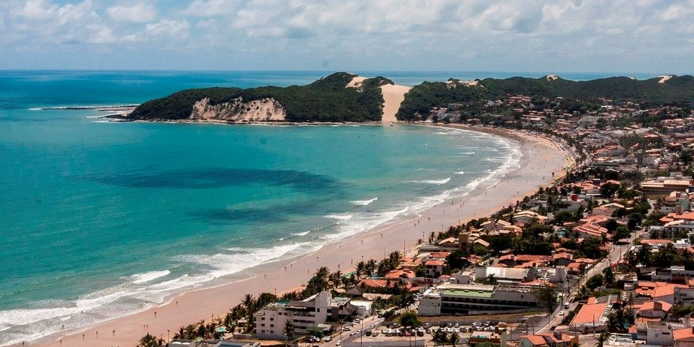
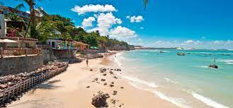

Ponta Negra
La popular Ponta Negra es un vecindario costero en el que predomina una playa del mismo nombre, que se extiende hasta el Morro do Careca, una imponente duna de arena rodeada de vegetación

Areia preta
La playa Areia Preta esta en unas de las zonas residenciales mas lindas de la ciudad, ofrece una vista perfecta para pasar el dia, disfrutar del mar, el sol y la arena.
Forte dos Reis Magos
Es una construcción militar de la fundación de la ciudad de Natal y fue construida por los portugueses para defender la capitanía de Rio Grande contra las invasiones francesas y holandesas

Pipa
Pipa es una playa en la ciudad costera de Tibau do Sul, situada en el estado de Rio Grande do Norte. Está en la costa atlántica y se ha convertido en un popular destino turístico debido a sus impresionantes playas, su exuberante vegetación y su ambiente relajado